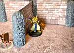
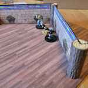
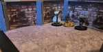

3D printable pillar connector for tabletop RPG paper terrain repo compatible with Paper Realm's tab-and-slot wall model. https://paperrealms.com
This pillar connector is designed to work with paper cardstock dungeon walls. The connector features slots on all four sides that accept paper wall tabs, allowing you to build modular dungeon interiors and building layouts. Paper Realms is also contributing templates and cutfiles for their tab-and-slot design model for anyone to customize for personal use!
This project was facilitated by OldSchoolDM, a paper-craft terrain aficionado, and implemented by his son. The driving desire was to support the minimum storage requirements for gaming terrain for dungeons and buildings. Inspired by the tab-and-slot design of Paper Realms, we wanted to add some heft - sturdiness and weight to the connectors. 3D Printing seemed like the perfect thing to hybrid with these compact but very detailed wall designs.
→ View 3D Models in Interactive Viewer
Paper Realms has contributed templates for you to customize your own paper walls to use with the 3D printed connectors (pillars) for this project. These pillars are compatible with existing 2" Paper Realm's walls - that's been on of our requirements for this project.
See the walls README for more.
pillar_connector.scad - OpenSCAD source file
(parametric, editable)pillar_connector.stl - Ready-to-print STL fileStandard PLA settings should work fine. The model is designed for FDM/FFF printers with typical 0.4mm nozzles.
Use "Detect thin walls" ensures your slicer doesn't skip the "paper-thin" segments that fit the wall slots. Keeping these thin slots allows compatibilty with preexisting paper wall designs.
The OpenSCAD file is parametric. Edit the parameters at the top of
pillar_connector.scad to adjust:
Regenerate the STL with:
openscad -o pillar_connector.stl pillar_connector.scadThis repository includes a web-based STL viewer for previewing all models. The viewer features:
Online: Visit https://frandallfarmer.github.io/3DProject/viewer.html to view all models in your browser.
Locally:
python3 -m http.server 8000Then open http://localhost:8000/viewer.html in your browser.
Everything here is under CC BY-SA-4.0, except the ViewSTL js files, which are under MIT - https://sourceforge.net/projects/viewstl/ for the latest.